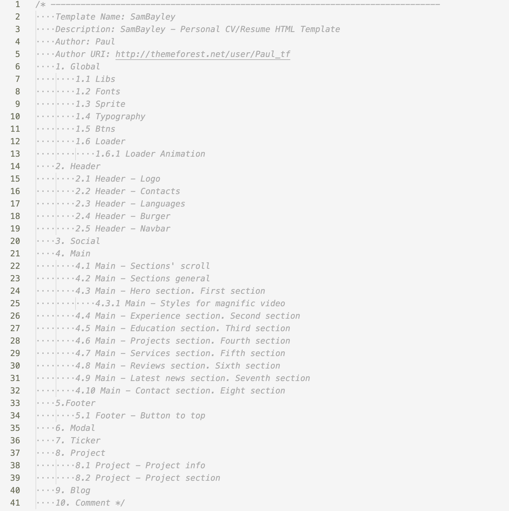
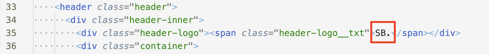
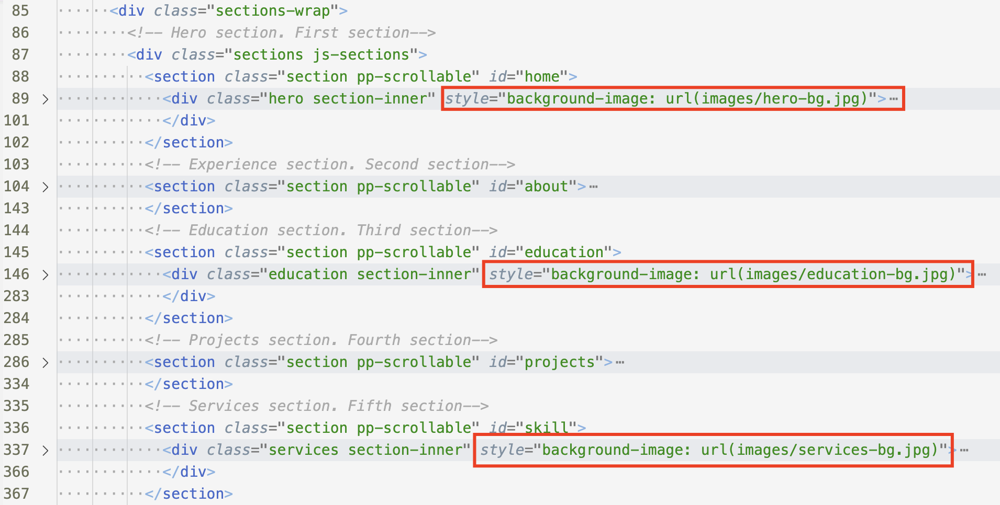
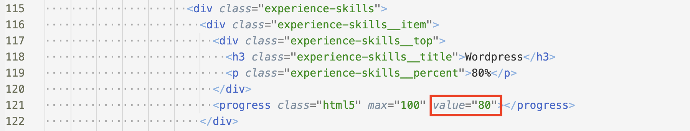
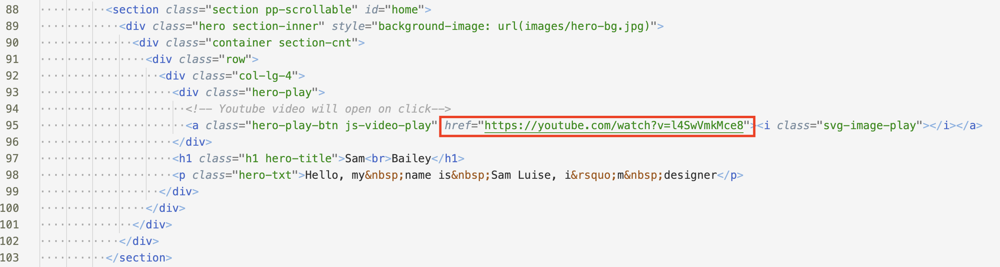
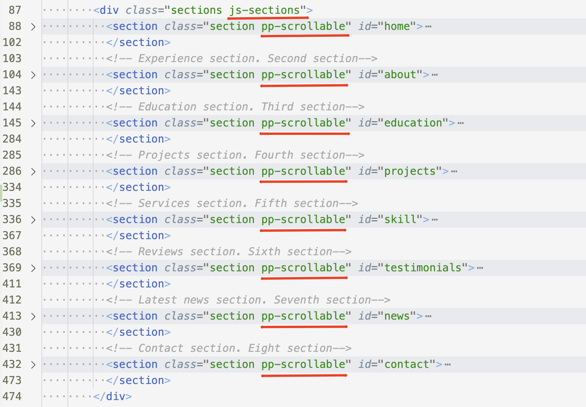
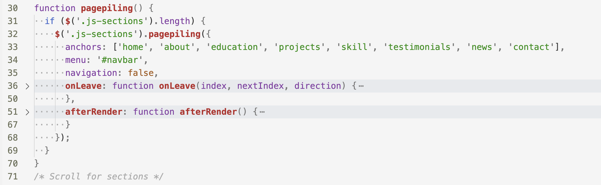
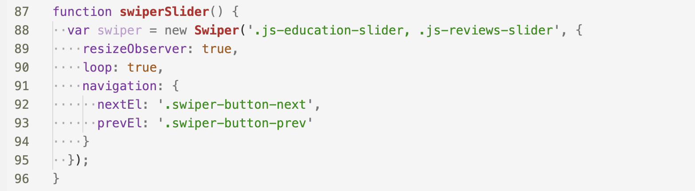
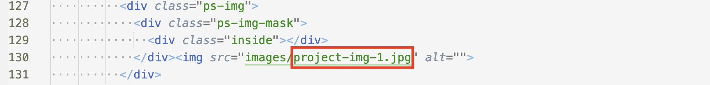
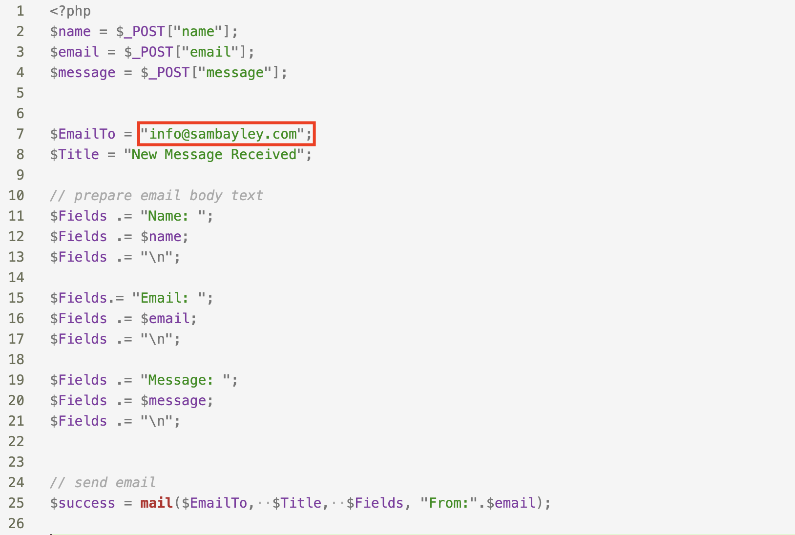

1. In the very beginning you can see css-map, it helps you to find all you want to change.
CSS:

2. Just change logo's text in header there:
HTML:

3. You can change backgrounds images in inline styles.

4. To change progress in progress bar, you can change numbers here:

5. You should insert link from YouTube instead of this example.
There is video in page project.html also. You can insert link from YouTube like in this example.

6. The framework of the sections is built using the pagepiling.js plugin, you can find the documentation here: alvarotrigo.com/pagePiling/
HTML:

JS:

7. All of sliders are built using the swiper.js plugin, you can find the documentation here: swiperjs.com/
JS:

8. Images on Project page you can change here:

9. Open mail.php and change the current email info@sambayley.com to your email address

jQuery http://jquery.com/
Bootstrap http://getbootstrap.com/
In this project Bootstrap is used only grid.
Magnific Popup https://dimsemenov.com/plugins/magnific-popup/
Magnific Popup is used for video.
Page Pilling http://alvarotrigo.com/pagePiling/
Swiper https://swiperjs.com/
jQuery validate https://github.com/jzaefferer/jquery-validation